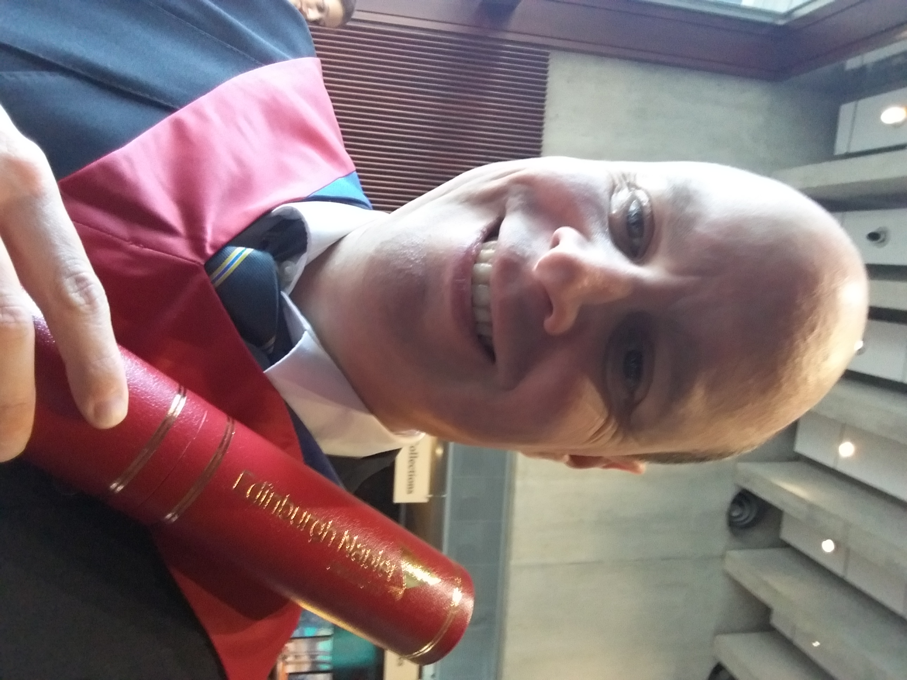

My work
A selection of my work
Marc Fairbairn, UX and digital marketing
I have experience of designing and carrying out user research, using methods including one-to-one interviews, focus groups, surveys and discount usability testing.
I’ve worked through the full user centred and service design cycle, from initial user research to collaborating on designing high-end prototypes.
I've carried out a full digital business plan analysis on HMV, including a social media audit. I also have my Google Analytics for Beginners accreditation.
UX and digital marketing, Edinburgh, Scotland
Treating every day as a school day since October 2012.
I'm a recent Edinburgh Napier University graduate (MSc Computing (User Experience), 2019). During my studies, I learned the full user centred design cycle, designing a prototype app for permacultural gardening in collaboration with my project group. I also learned web development and programming for the web using HTML, CSS, Bootstrap, PHP and C#.
My dissertation subject was Designing for citizen science: developing blended spaces for observing solitary bees. I looked at ways of using blended spaces to draw people into an interest in environmental issues, while keeping them engaged and making repeated visits to the site by turning them into volunteer scientific researchers.
I'm a proud Open University graduate in psychology. I specialised in the phenomenology of musical performance, carrying out research with adults and designing research for child participants.
I'm currently working on a postgraduate Project Management module via Edinburgh Napier University, finishing in April. I'll also be working on my Squared Online accreditation between March and September this year.
I have over 25 years of customer service, user acceptance testing and administration experience across sectors as diverse as financial services, government and utilities.
A selection of my work